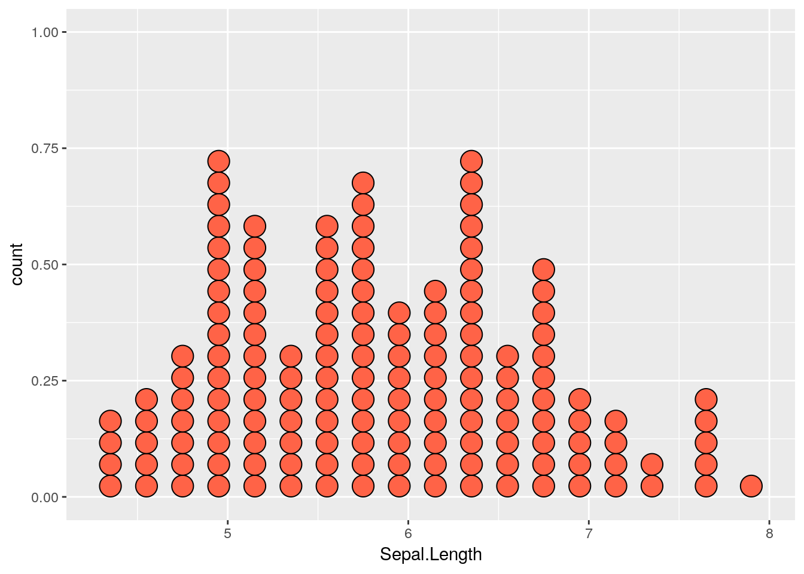
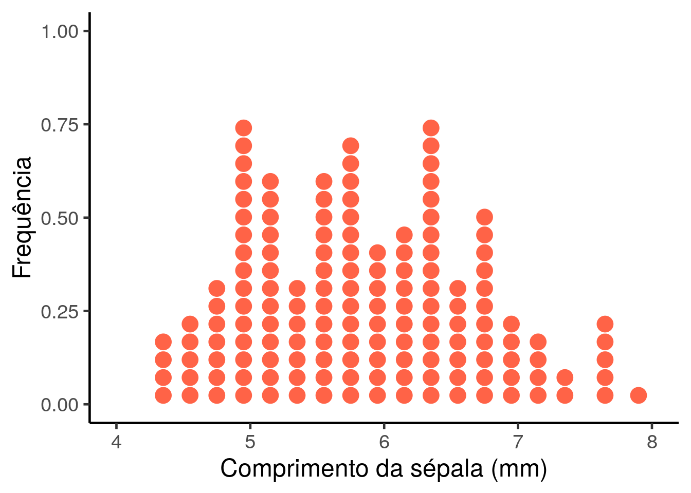
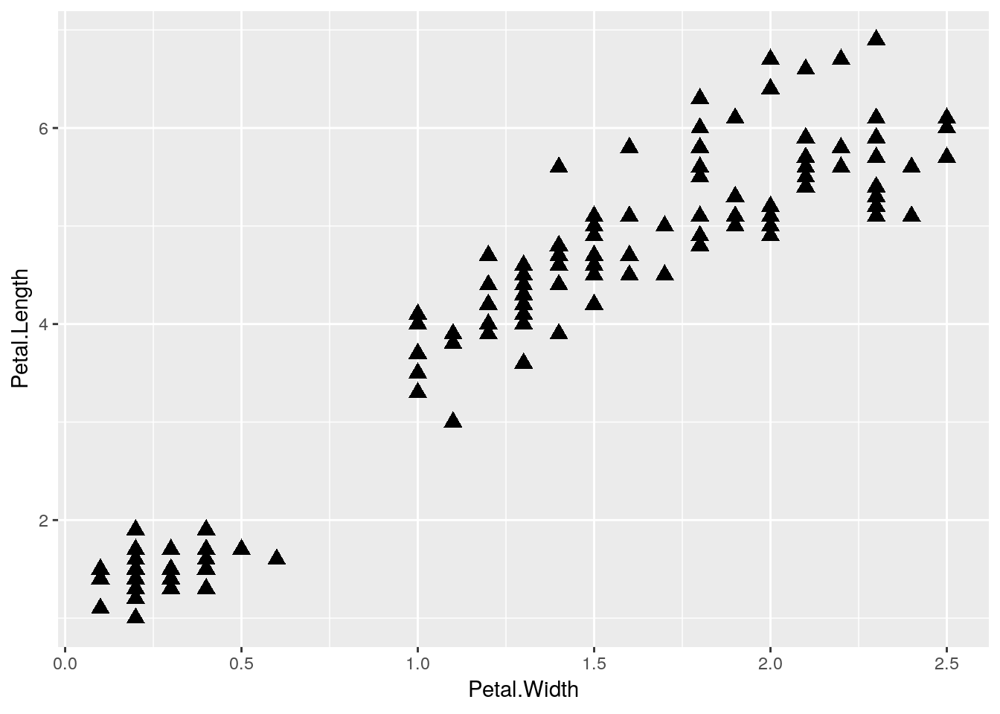
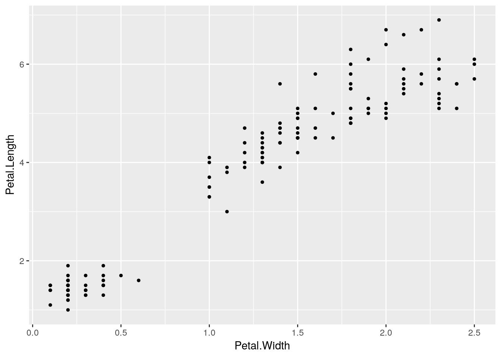
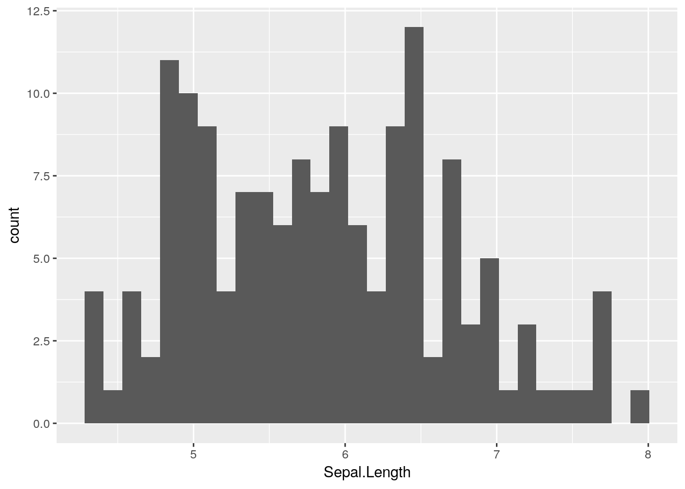

4 Gráfico de Barras
Neste capítulo você irá aprender a criar Gráfico de Barra no R utilizando o ggplot2.
4.1 Gráfico de Barras (simples)
O gráfico de barras utiliza retângulos para repsentar uma variável contínua, sendo que o comprimeno dos retângulos é proporcional ao valor que ele está representando. A função geom_bar() plota uma variável contínua em função de uma variável categórica no eixo x.
# Simulando um banco de dados
df <- data.frame(tratamento = c("a", "b", "c"),
tamanho = c(1.3, 1.9, 3.2))
# Boxplot
ggplot(df, aes(y = tamanho, x = tratamento)) +
geom_bar(stat = "identity")4.2 Ajustes básicos
Argumentos
- width para definir a largura das barras.
- fill para definir a cor de preenchimento das barras.
- color para definir a cor da linha de contorno das barras.
4.2.1 Cor e preenchimento
#Gráfico de Barras com preenchimento colorido
ggplot(df, aes(y = tamanho, x = tratamento)) +
geom_bar(stat = "identity", fill = "tomato")
#Gráfico de Barras com contorno colorido
ggplot(df, aes(y = tamanho, x = tratamento)) +
geom_bar(stat = "identity", color = "tomato")4.2.2 Largura das barras
#Gráfico de Barras com largura modificada
ggplot(df, aes(y = tamanho, x = tratamento)) +
geom_bar(stat = "identity", width = .75) +
ggtitle("width = .75")
#Gráfico de Barras com largura modificada
ggplot(df, aes(y = tamanho, x = tratamento)) +
geom_bar(stat = "identity", width = 0.25) +
ggtitle("width = .25") 
4.2.3 Orientação das barras
#Gráfico de Barras Vertical
ggplot(df, aes(y = tamanho, x = tratamento)) +
geom_bar(stat = "identity")
#Gráfico de Barras Horizontal
ggplot(df, aes(y = tamanho, x = tratamento)) +
geom_bar(stat = "identity") +
coord_flip()4.3 Colorindo por categoria
No exemplo abaixo, utilizamos cores diferentes para ilustrar os tratamentos diferentes através do argumento fill = tratamento.
#Gráfico de Barras com preenchimento colorido
ggplot(df, aes(y = tamanho, x = tratamento, fill = tratamento)) +
geom_bar(stat = "identity")
4.4 Gráfico de barras (bonito)
Todo o final de capítulo temos a demonstração de um gráfico mais elegante. Veja o capítulo XXX para mais detalhes de como manipular cada detalhe do seu gráfico com o ggplot2, mas ao observar o script abaixo você pode ir aprendendo com cada exemplo.
#Gráfico de Barras
ggplot(df, aes(y = tamanho, x = tratamento)) +
geom_bar(stat = "identity", fill = gray(.3)) +
scale_y_continuous(limits = c(0,3.5), breaks = seq(0,3.5,.5)) +
theme_classic(base_size = 18) +
xlab("Tratamento") +
ylab("Comprimento da plântula (cm)") #<<